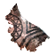
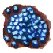

Кожа великана
Предметы / С врагов
Открыть в интерактивной вики →
| Цена | 10 000 |
|---|---|
| Вес | 10 |
Описание
Компонент, используемый при изготовлении
Вес: 10

Лиметитовый элементВес: 10
| Ингредиент для изготовления Лиметитового элемента. |
Дроп


Применение
|
Как добыть
Получаем за победу над:
|